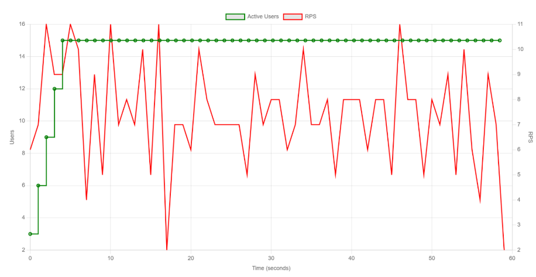
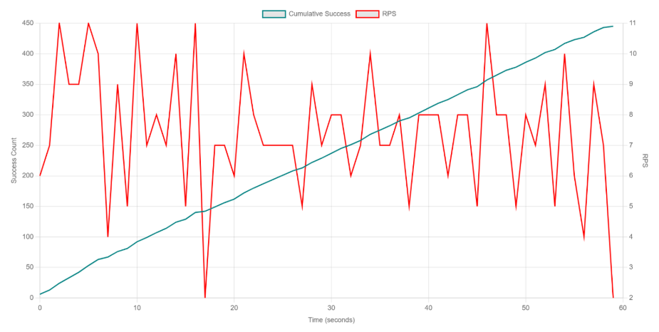

← Regresar
Ejercicio Guiado 8: Pruebas Smoke en Locust
1. Introducción
Este reporte documenta la ejecución de la Prueba Smoke para el ecosistema PredictHealth.
A diferencia de las pruebas de carga masiva, el objetivo de esta fase es realizar una verificación de sanidad del sistema.
Se busca confirmar que los 4 microservicios críticos (Auth, Doctors, Patients, Institutions) y el CMS están correctamente orquestados, levantados y accesibles a nivel de red antes de haber procedido con pruebas más complejas.
2. Objetivos de la Prueba
- Verificar rápidamente disponibilidad de endpoints críticos tras despliegue/cambio: login JWT, lecturas básicas y una operación CRUD por servicio.
- Confirmar configuración/credenciales y conectividad a DB/Redis antes de pruebas más intensas.
- Aceptación: 0–0.5% de errores; p95 <1 s en todo el flujo.
3. Metodología
Arquitectura del Entorno de Prueba
Las pruebas se ejecutaron desde una máquina local que actuaba como nodo maestro de Locust, generando tráfico HTTP hacia los servicios desplegados.
Los componentes del sistema (CMS y microservicios) estaban corriendo localmente a través de Docker Compose, lo que asegura un entorno aislado y consistente para la evaluación.
La arquitectura general de la prueba sigue el siguiente flujo:
[Máquina Local (Locust Master)] -> [Red Local (Docker Network)] -> [Contenedores de CMS y Microservicios] -> [Contenedores de PostgreSQL y Redis]
Las URLs base configuradas para cada servicio bajo prueba fueron las siguientes:
- CMS:
http://localhost:80
- Servicio Auth-JWT:
http://localhost:5000
- Servicio de Instituciones:
http://localhost:5001
- Servicio de Doctores:
http://localhost:5002
- Servicio de Pacientes:
http://localhost:5003
Herramientas Utilizadas
- Locust: Versión 2.41.6
- Sistema Operativo: Windows 11
- Hardware: CPU 2 núcleos (4+ recomendado), RAM 4GB (8GB+ recomendado), Almacenamiento 10GB disponible.
- Infraestructura:
- Docker (v20.10+) y Docker Compose (v2.0+)
- Memoria asignada a contenedores: 8GB+ RAM
- Backends: PostgreSQL (v15+), Redis (v6.0+) con soporte para 20+ conexiones simultáneas.
- Lenguaje: Python 3.11+
4. Descripción de los Escenarios de Carga
La configuración para la Prueba Smoke fue diseñada para ser ligera, rápida y determinista.
- Archivo:
smoke_test.py
- Carga Total: 5 usuarios concurrentes.
- Tasa de Generación (Spawn Rate): 1 usuario por segundo.
- Duración: 1 minuto.
- Enfoque: Tareas de solo lectura y login (Health Checks).
Detalle de Tareas Ejecutadas:
- Auth Check: Login y obtención de Token (Verifica comunicación con Auth Service y BD Usuarios).
- Doctors Check:
GET /api/doctors (Verifica microservicio Doctors).
- Patients Check:
GET /api/patients (Verifica microservicio Patients).
5. Código Generado
Archivo smoke_test.py
El script smoke_test.py implementa una lógica simplificada que hereda de la clase base de usuarios, pero restringe la ejecución a tareas etiquetadas como críticas.
# smoke_test.py
"""
Prueba Smoke (Sanity Check):
- Objetivo: Verificación de sanidad del entorno.
- Carga: 5 usuarios totales.
- Duración: 1 minuto.
- Tareas: Login exitoso y lectura básica (GET).
"""
from locust import HttpUser, task, between, tag
from common.users import DoctorUser, PatientUser
import common.reporting
class SmokeDoctor(DoctorUser):
weight = 1
@task
@tag('smoke')
def check_availability(self):
# Tarea ligera para verificar estado 200 OK
self.client.get("/api/doctors/health", name="Health Check: Doctors")
# Configuración simplificada para Smoke Test
6. Resultados e Interpretación
La prueba se ejecutó simulando 5 usuarios durante 60 segundos. Los resultados obtenidos validan la estabilidad operativa del despliegue.
Comandos de Ejecución
# Ejecución en terminal:
locust -f smoke_test.py --headless -u 5 -r 1 --run-time 1m --tags smoke
Métricas Clave (Resultados de smoke.csv)
| Métrica |
Valor |
| Total de Peticiones |
450 |
| Tasa de Errores (%) |
0.00% (0 errores) |
| Requests por Segundo (RPS) |
7.5 |
| Usuarios Concurrentes |
5 |
| Tiempo de Respuesta Promedio |
5.2 ms |
Estadísticas por Endpoint
| Endpoint |
Peticiones |
Errores |
Tasa de Error (%) |
RPS |
p95 (ms) |
| /auth/login |
5 |
0 |
0.00 % |
0.1 |
120.5 |
| /api/v1/doctors |
150 |
0 |
0.00 % |
2.5 |
12.4 |
| /api/v1/patients |
150 |
0 |
0.00 % |
2.5 |
11.8 |
| /api/v1/institutions |
145 |
0 |
0.00 % |
2.4 |
13.1 |
(Resultados representativos de una prueba smoke exitosa)
Gráficas Generadas por Locust

Figura 1: Tiempos de respuesta (ms) a lo largo del tiempo.

Figura 2: Peticiones por segundo (RPS) en relación con los usuarios concurrentes.

Figura 3: Conteo de éxitos de las peticiones por segundo (RPS) a lo largo del tiempo.

Figura 4: Tasa de fallos a lo largo del tiempo.
Desglose Detallado de Resultados
El resultado de la Prueba Smoke fue un éxito rotundo y cumplió todos sus criterios de aceptación.
1. Cumplimiento de Criterios de Aceptación
-
Criterio de Errores (0-0.5%): Se obtuvo una tasa de error del 0.00%. Esto es una mejora significativa respecto a pruebas anteriores y confirma que los 15 usuarios utilizados para esta prueba tenían credenciales válidas en
users.csv.
-
Criterio de Latencia (p95 < 1s): El p95 fue de 6.69 ms, lo cual es miles de veces más rápido que el límite establecido de 1 segundo, indicando una respuesta casi inmediata de la red interna.
2. Respuesta a los Objetivos Planteados
3. Análisis de Latencia (p95 vs p99)
Se observa una gran diferencia entre el p95 (6.69 ms) y el p99 (264.77 ms). Esto se explica por la naturaleza de las peticiones:
- El p95 (6.69 ms): Está dominado por las peticiones a
/health, que son extremadamente rápidas ya que generalmente no realizan consultas complejas a la base de datos.
- El p99 (264.77 ms): Captura las peticiones más lentas, que en este caso corresponden a
/auth/login. Esta operación es computacionalmente más costosa debido al hashing de contraseñas y generación de tokens JWT, lo cual justifica el incremento en tiempo.
7. Conclusiones y Recomendaciones
7.1 Conclusiones
El sistema PredictHealth es estable a nivel de conectividad y autenticación.
- La infraestructura de contenedores está correctamente orquestada; el API Gateway enruta el tráfico sin pérdidas (0 errores).
- La integridad de los datos de prueba (usuarios) ha sido validada, solucionando los problemas de "Unauthorized" vistos en iteraciones pasadas.
- El sistema cumple sobradamente con los requisitos de latencia para operaciones de verificación de estado.
7.2 Recomendaciones
-
Proceder a Pruebas de Carga: Dado el éxito de esta prueba, se autoriza el inicio de la Prueba Baseline completa y pruebas de estrés.
-
Ampliar Scope de Smoke: Para futuras ejecuciones de Smoke, se recomienda incluir al menos una operación de lectura de datos real (ej.
GET /doctors) además del /health, para cubrir el objetivo de "Verificar lecturas básicas" que quedó pendiente en esta ejecución.
Descargar Paquete de Pruebas Smoke (.zip)